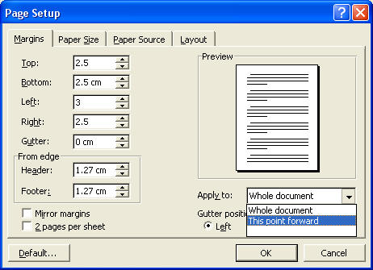
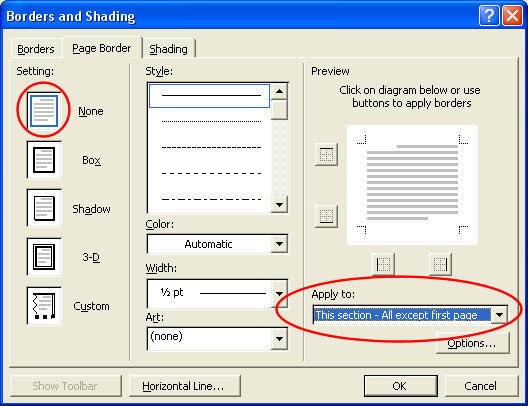
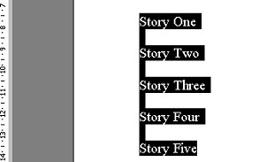
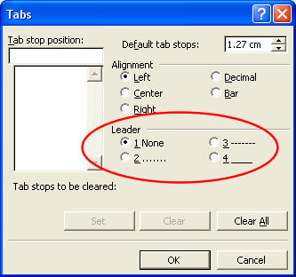
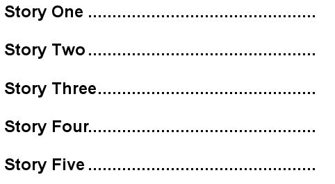

Free
computer Tutorials
|
Free
computer Tutorials
|
|
 home home |
|
||||
|
This tutorial is part of an ongoing lesson. View the first part here How to Create a Table of Contents in Microsoft WordBefore we create the Table of Contents page, we need to change the margins on page 2. At the moment, they are to rather wide values. This is because of our cover page. So, move your cursor to the very top of your blank second page, do the following:
Top 2. 5 cm Click the black down arrow on the Apply To box  It's important to make sure that any borders are switched off.
You get another dialogue box popping up. On this dialogue box, click "None" for the Border setting. And make sure the "Apply To" reads "This section - All except first page", as in the image below:  Now click OK. Keep clicking OK until you are returned to your Word document What you should now have is a blank second page with different margins to the first page, and no border. We can now add our Table of Contents page. There's not a lot to the Table of Contents page. You already know how to change the font size, make it bold, and change to a different font. The only thing you haven't learned yet is about Leaders.
Adding Leaders to your Microsoft Word DocumentsA Leader is just a series of dots after some text. Like this: Story One ....................................................... You set up a Leader like this:
 The Leader works in conjunction with the Tabs. So click on Format from the menu bar. From the drop down list, select Tabs. You get the tabs dialogue box popping up.  You can see that there are 4 different types of Leaders on the Tabs dialogue box. Actually three, because number one says "None".
To see how your Leader works, position your cursor so that it's flashing after the letter "e" of "Story One". Press the tab key on your keyboard (The tab key is the one just above the Caps Lock, on the left hand side) You should find that the cursor jumps to your tab stop position, and the dotted line is inserted. Do the same for all the lines of your Table of Contents page, so that it looks similar to the below: 
You're now ready to inert your stories. If you haven't yet been through the lesson on how to insert a text file, click below.Similarly, if you haven't yet done the sction on inserting Clip art, click the link. In the next section, we'll take a look at how to insert a page break.
How to Insert a Page Break in Word--> |
|||||
|